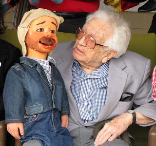

Guest of Honor
3/1/2011
{kind=link}

Peter Rich, a resident of San Antonio, is "mostly retired" from his lifetime career as a professional ventriloquist. Health matters do limit his travel, but thanks to Bob Abdou, Peter, accompanied by his well-known sidekick, "Rawhide", was able to enjoy the recent Texas ventriloquist gathering.
Peter still performs when he has opportunity and Tom Rogers told me Peter and "Rawhide" were the hit of the open mic session and continued to entertain during informal chat sessions. Although Peter will turn 90 this June, Lori Bruner said, "he is so quick-witted and has quite the sense of humor!" (I've always found Peter's humor refreshingly unique as you will see in the post that follows.)
During dinner Peter shared stories of Frank Marshall and Paul Winchell. "Rawhide" was carved by Marshall over 50 years ago at a cost of $350. Peter has been invited to return for next year's gathering, of course, as will all vents and puppeteers in the area of Austin (or willing to make the trek).
* * * * *
Contributing to this post: Thomas Rogers, Charles Prouty, and Lori Bruner